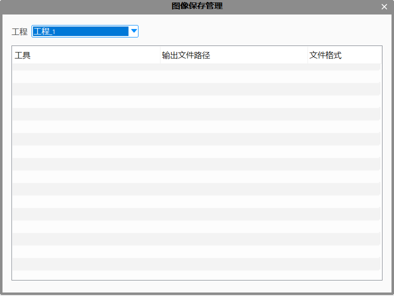

图像保存管理模块的主要作用是帮助用户集中管理所有保存图像的输出路径和文件格式。该模块可以管理每个工程下的输出图像，在指定工程下仅能管理该工程下所有具有输出图像的工具。针对每个工具的图片输出路径、文件格式可进行统一设置，如图1所示。

用户可通过主菜单中选择“设置”菜单项，并点选“图像保存管理”子菜单项使用该功能，如图2所示。
工程：支持用户对选择指定工程下的图像进行保存管理，如图3所示。
输出路径：双击弹出文件浏览对话框，可对指定工具的图像输出路径进行选择。
文件格式：点选可对图片文件的输出格式进行设置。